Logo
August Majtenyi
Final Presentation
 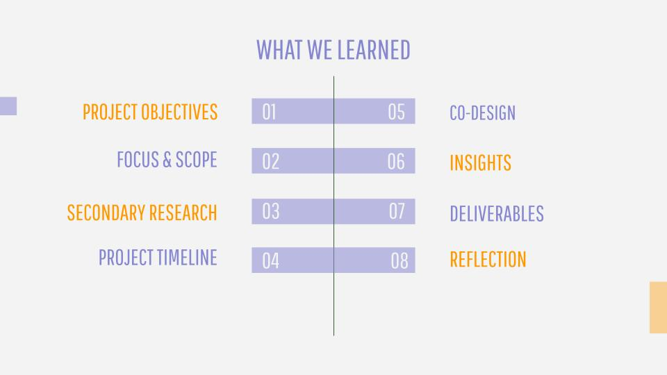
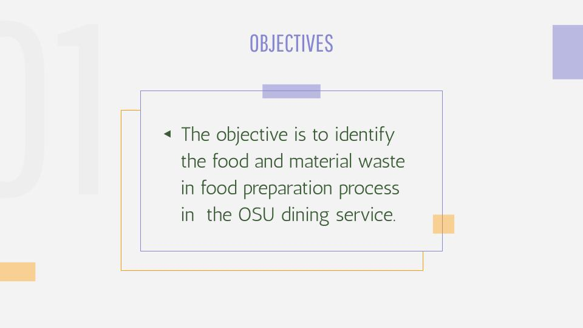
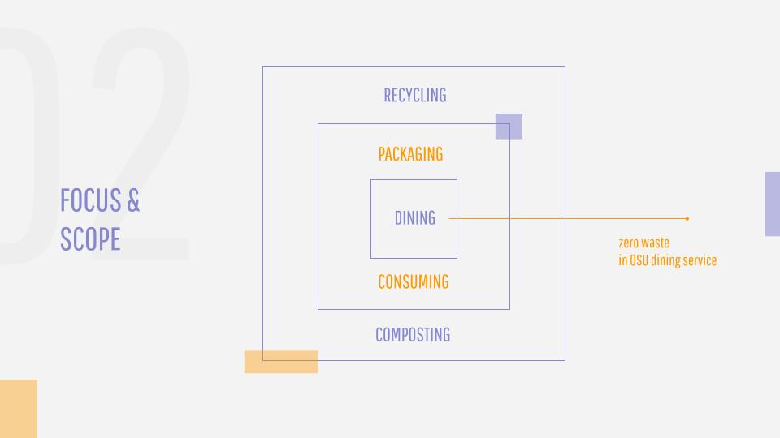
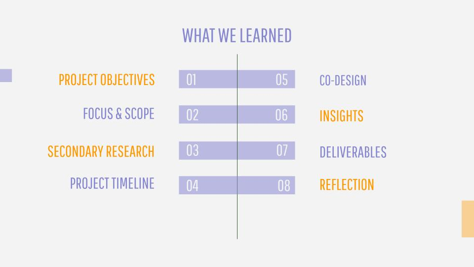
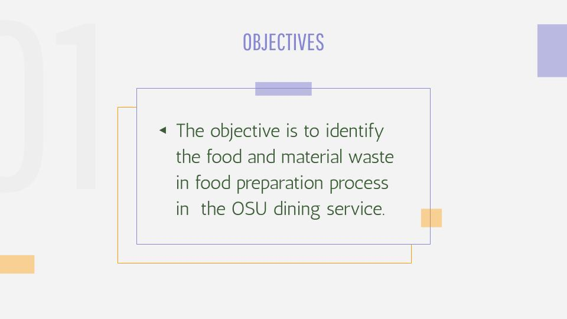
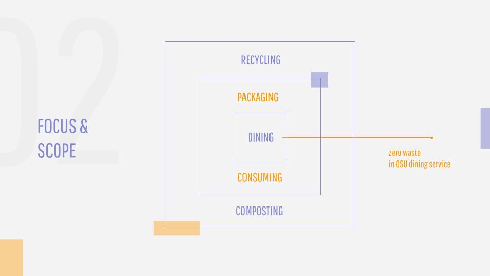

 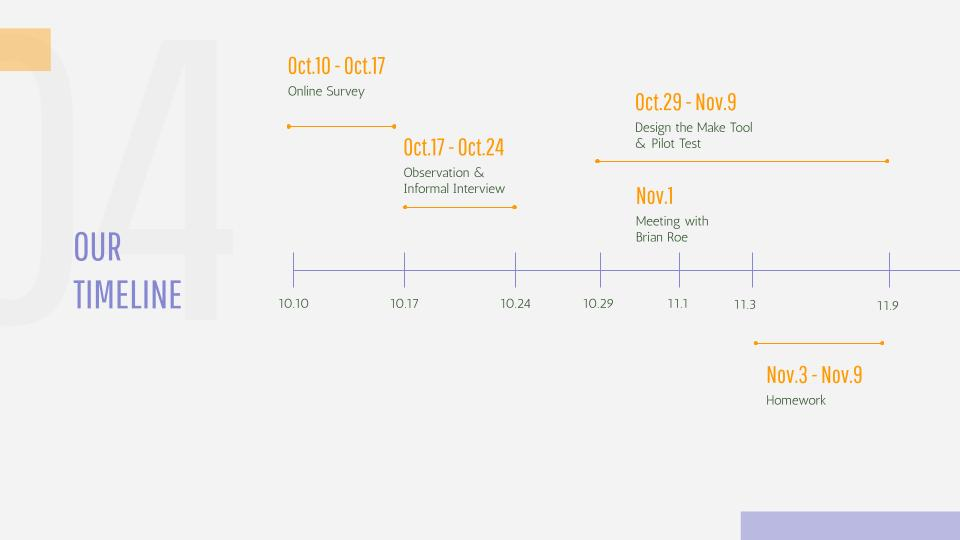
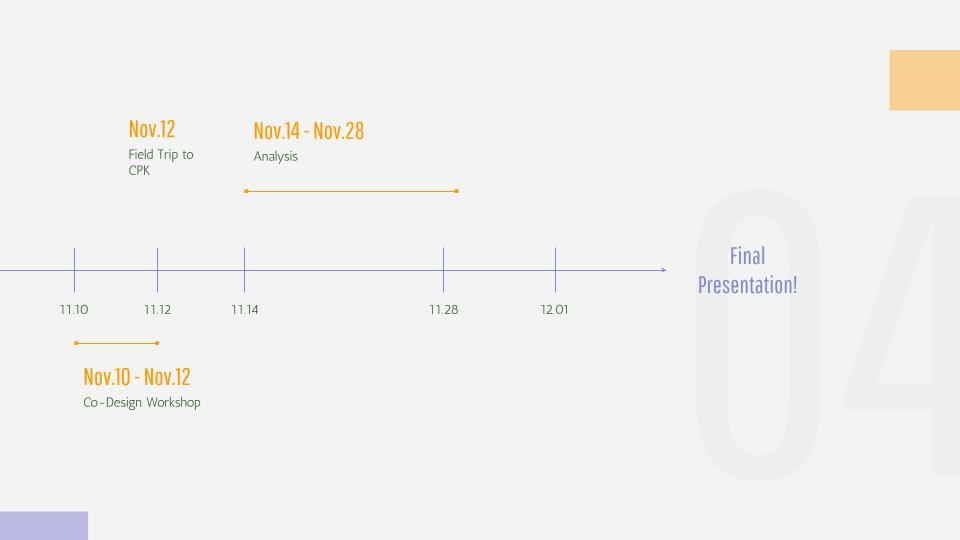
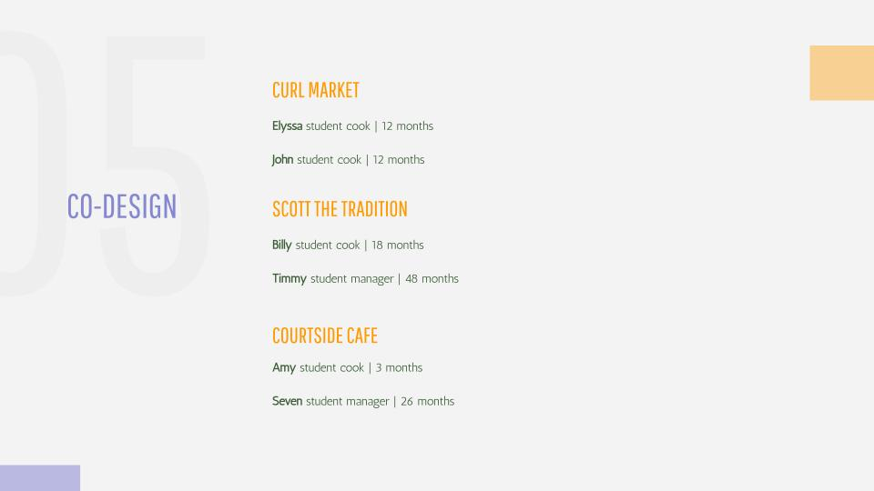
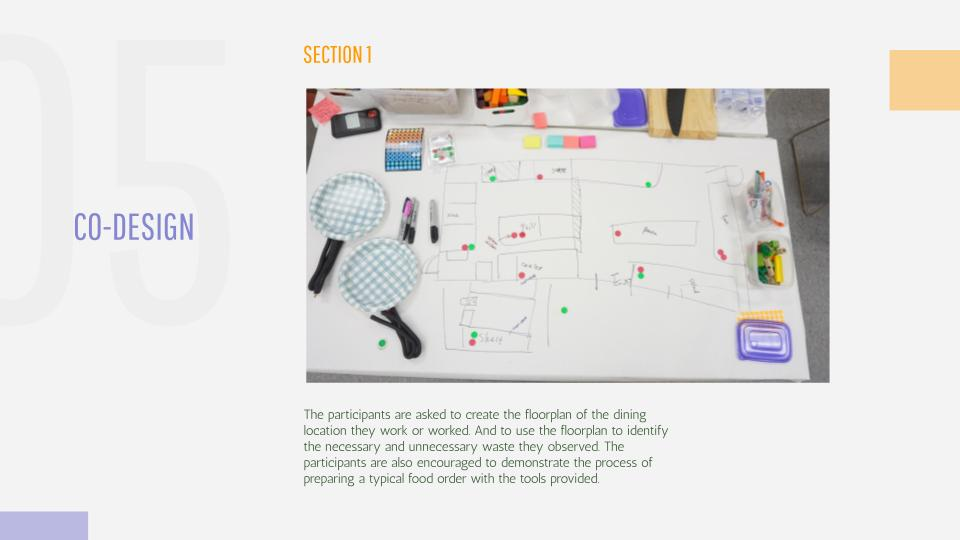
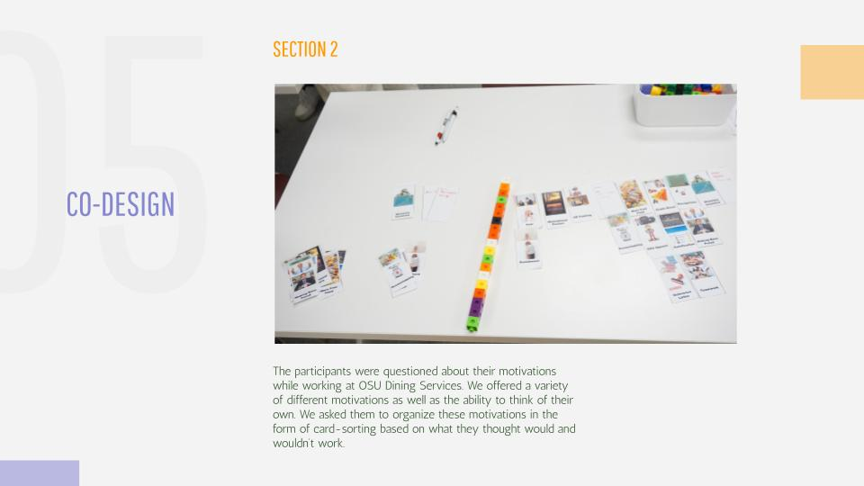
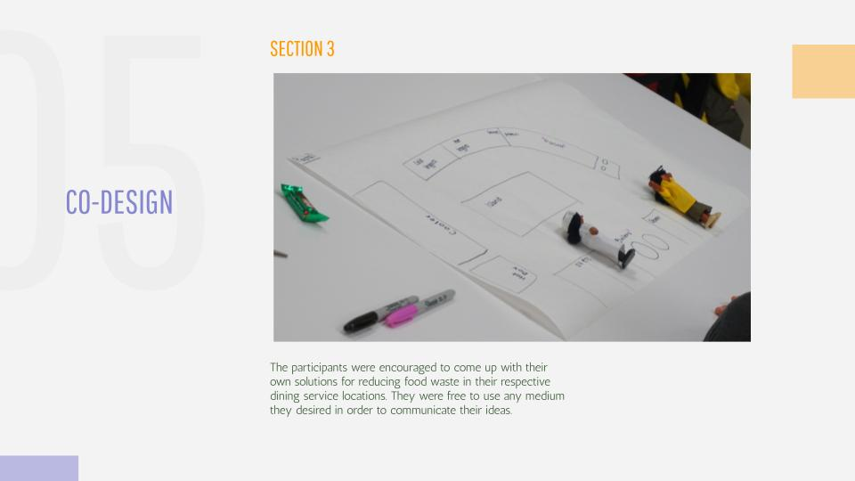
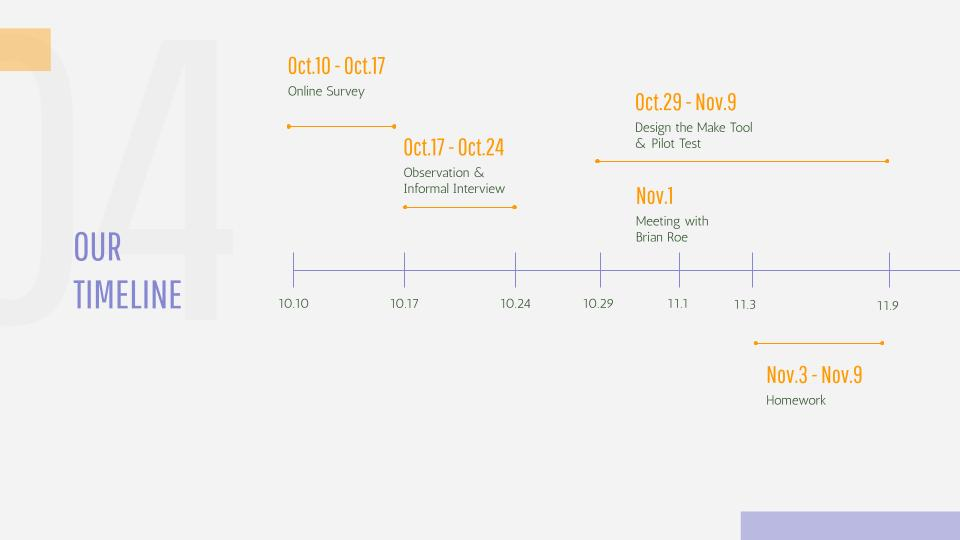
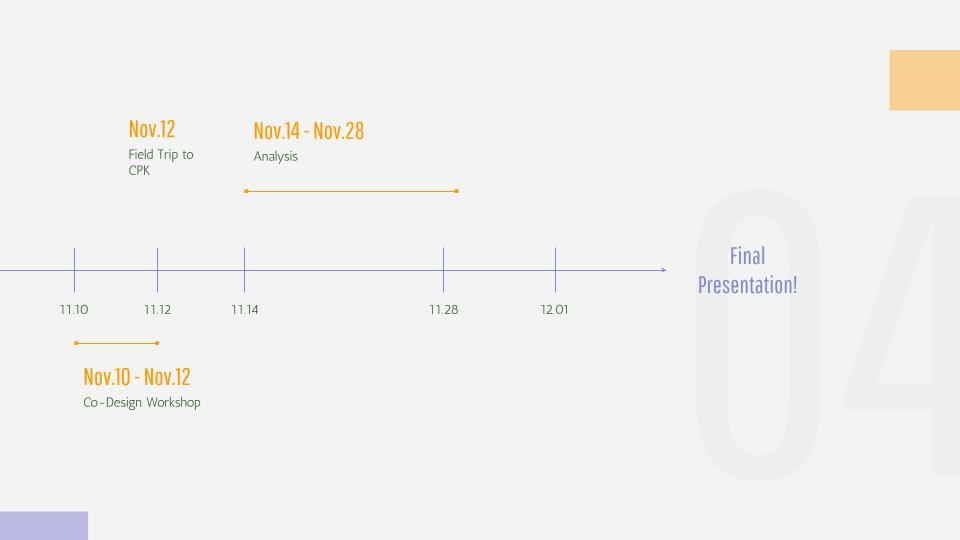
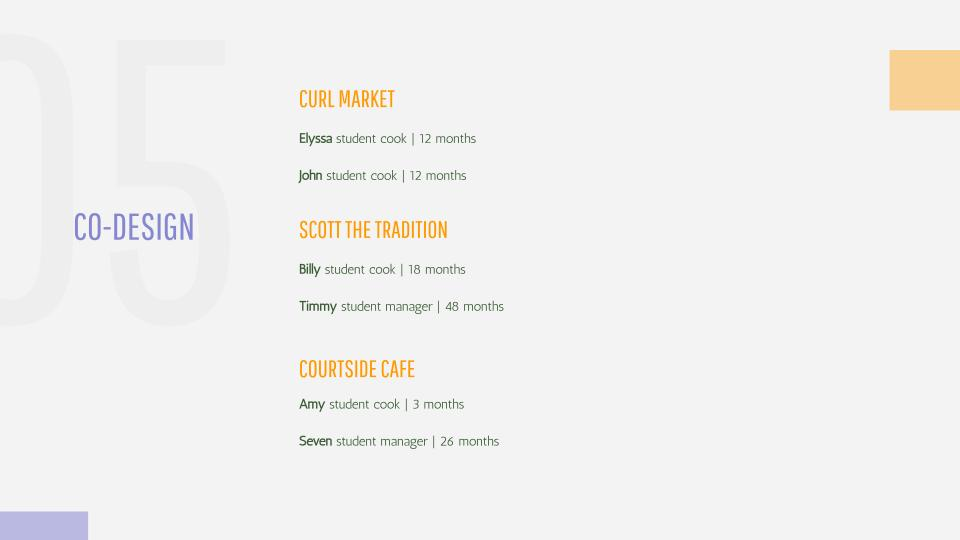
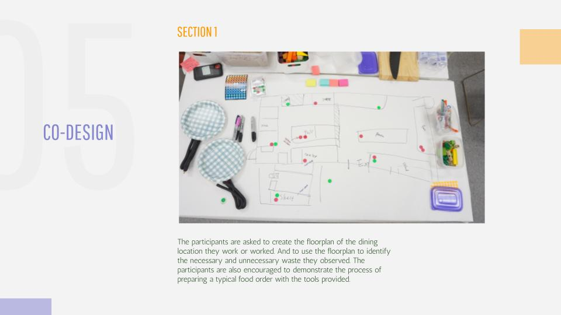
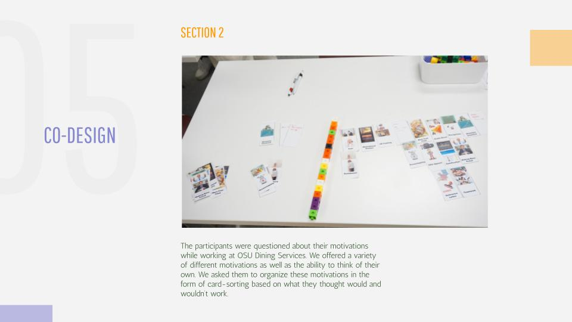
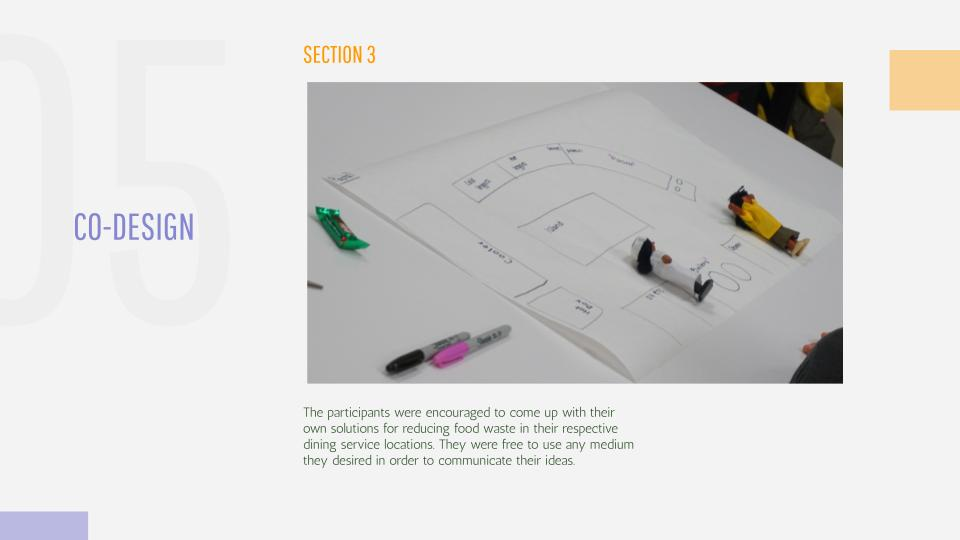


Project Members: August Majtenyi, Shijie Li, Ruohan Wang, Sherry Xiao, and Xueqing Wang
This is a topic that I have a lot of passion for. Due to confidentiality agreements, I cannot publicly show anything else. But please email me if you'd like to learn more about this research!